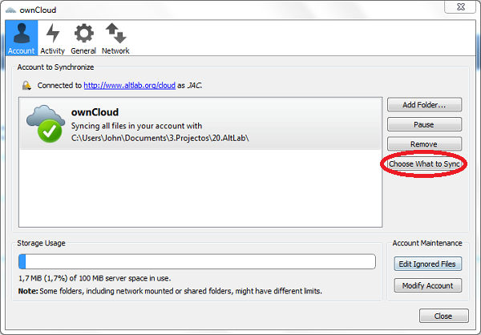
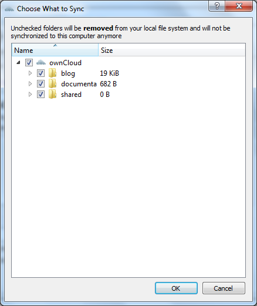
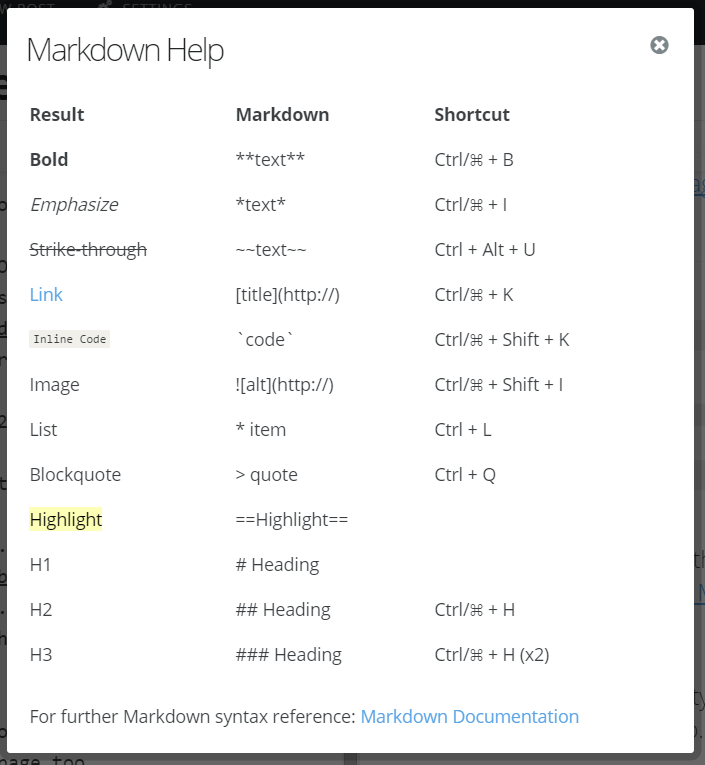

Topo
Bem-Vindo ao altLab.
para trabalhares com a infraestrutura de documentação do altLab. necessitas das credenciais que os administradores te forneceram para acesso aos serviços de suporte do documenta. uma vez na posse destes dados podes iniciar o trabalho via web ou via ambiente de trabalho da tua máquina, para isso necessitas instalar/configurar o software.
Precisas realizar estes passos para estares pronto e ao par com os outros membros, o acesso aos recursos do altLab podem ser realizados via Web ou com um cliente no teu ambiente de trabalho.
A estrutura da documentação do altLab é descrita na secção dedicada ao documenta, uma vez compreendida, podes passar à fase de compreensão da linguagem utilizada para suporte dos documentos do altLab o Markdown utiliza a cheatsheet fornecida
No caso de precisares de resolver problemas podes utilizar a secção no fim deste documento num primeiro passo
Software - Instalação
os passos para instalares o software que te permitirá aceder à infraestrutura de documentação do altLab são descritos a seguir:
- acesso Web
1 - o acesso via web é realizado através do endereço altlab.org/cloud, com as credenciais que te foram fornecidas e não necessita de software
- sincronia com o ambiente de trabalho
1 - instala o Owncloud Desktop
2 - defne a pasta que pretendes utilizar para sincronizar os teus documentos como membro, assim como os documentos partilhados que pertencem ao colectivo


utilização owncloud
Abordagem Web
A abordagem web mais simples e sem necessidade de instalações e configurações é mais rápida. e acede-se apenas através do link para o owncloud online! com o link fornecido acima.
Abordagem com cliente Linux/windows/Mac
ao configurar o owncloud desktop a sincronia dos documentos usualmente realiza-se em menos de 10 segundos, pelo que é conveniente ter alguma paciência entre a gravação do ficheiro e o refrescamento do navegador pois a plataforma que serve os ficheiros pode não ter sido actualizada.
Documenta
A estrutura das pastas do documenta resumem-se ás pastas da raiz
- Blog > a página principal de chegada quando alguém navega no documenta e acede à tua página de membro
- documenta > pasta de raiz onde serão colocadas as tuas pastas relativas aos teus projectos
- shared > documentação partilhada onde serão colocadas as diferentes pastas que dizem respeito a todo o lab e que são propriedade de todos.
MarkDown - Cheat Sheet
para referência podes imprimir esta imagem que se apresenta a seguir por forma a reavivares a memória de como se escreve MarkDown

If you create a folder within the content folder (e.g. content/sub) and put an index.md inside it, you can access that folder at the URL
http://yousite.com/sub. If you want another page within the sub folder, simply create a text file with the corresponding name (e.g. content/sub/page.md)
and you will be able to access it from the URL http://yousite.com/sub/page. Below we've shown some examples of content locations and their corresponding URL's:
| Physical Location | URL |
|---|---|
| content/index.md | / |
| content/sub.md | /sub |
| content/sub/index.md | /sub (same as above) |
| content/sub/page.md | /sub/page |
| content/a/very/long/url.md | /a/very/long/url |
If a file cannot be found, the file content/404.md will be shown.
PHILE MARKDOWN CHEAT SHEET
Text File Markup
At the top of text files you can place a block comment and specify certain attributes of the page. For example:
/*
Title: Welcome
Description: This description will go in the meta description tag
Author: Joe Bloggs
Date: 2013/01/01
Robots: noindex,nofollow
*/
Phile also allows HTML style block comments:
<!--
Title: Welcome
Description: This description will go in the meta description tag
Author: Joe Bloggs
Date: 2013/01/01
Robots: noindex,nofollow
-->
Header Tags
#Header 1
##Header 2
###Header 3
####Header 4
#####...
Bold and Italics
**Bold**
_Italicize_ or *italicize*
Ordered List
1. Item (Hit Return key = automatic numbers or bullets)
2. Item
3. Item
Blockquotes
Blocks of code are either fenced by lines with three back-ticks ``` or are indented with four spaces.
Links
<URL Link>
[Anchor] (URL)
Inline Image
![Image Tag]
![Image Tag] (direct image URL link)
Youtube and Vimeo videos
Example:
Make sure you leave a return before and after the code, use it like this;
youtube=LyemmoPBOUY
To make the video start at a specific time ex.(start at 5m3s) use;
youtube=LyemmoPBOUY?start=302
---
vimeo=126335511 (not working yet)
Note: phileYoutube Plugin.php at line 40 in src=\"//www.youtube.com/embed/{$id}?rel=0 > was changed to ?rel=0 to allow start times and other youtube queries.
Horizontal Line
----
Strikethrough
~~Strikethrough~~
Superscrip e Subscript (AKA Footnotes)
[^1]
[^1]:
Table
Colons can be used to align columns.
| Tables | Are | Cool |
| ------------- |:-------------:| -----:|
| col 3 is | right-aligned | $1600 |
| col 2 is | centered | $12 |
| zebra stripes | are neat | $1 |
The outer pipes (|) are optional, and you don't need to make the raw Markdown line up prettily. You can also use inline Markdown.
Markdown | Less | Pretty
--- | --- | ---
*Still* | `renders` | **nicely**
1 | 2 | 3
<!--
Welcome to Phile
Congratulations, you have successfully installed Phile. Phile is a Markdown based flat file CMS.
Creating Content
Phile is a flat file CMS, this means there is no administration backend and database to deal with. You simply create .md files in the "content"
folder and that becomes a page. For example, this file is called index.md and is shown as the main landing page.
If you create a folder within the content folder (e.g. content/sub) and put an index.md inside it, you can access that folder at the URL
http://yousite.com/sub. If you want another page within the sub folder, simply create a text file with the corresponding name (e.g. content/sub/page.md)
and you will be able to access it from the URL http://yousite.com/sub/page. Below we've shown some examples of content locations and their corresponding URL's:
| Physical Location | URL |
|---|---|
| content/index.md | / |
| content/sub.md | /sub |
| content/sub/index.md | /sub (same as above) |
| content/sub/page.md | /sub/page |
| content/a/very/long/url.md | /a/very/long/url |
If a file cannot be found, the file content/404.md will be shown.
Text File Markup
Text files are marked up using Markdown. They can also contain regular HTML.
At the top of text files you can place a block comment and specify certain attributes of the page. For example:
/*
Title: Welcome
Description: This description will go in the meta description tag
Author: Joe Bloggs
Date: 2013/01/01
Robots: noindex,nofollow
*/
Phile also allows HTML style block comments:
<!- -
Title: Welcome
Description: This description will go in the meta description tag
Author: Joe Bloggs
Date: 2013/01/01
Robots: noindex,nofollow
- ->
Custom Meta
You can actually create custom meta attributes by default in Phile. If you want to add a date, author, or even something else, this can be done easily. These values will be contained in the {{ meta }} variable in themes (see below).
Custom Meta Ordering
You can order pages by their custom meta attributes. Like creating an Order meta for each page, then you can use $config['pages_order_by'] = "meta:order"; in your config.php file.
Themes
You can create themes for your Phile installation in the "themes" folder. Check out the default theme for an example of a theme. Phile uses
Twig for it's templating engine. You can select your theme by setting the $config['theme'] variable
in config.php to your theme folder.
All themes must include an index.html file to define the HTML structure of the theme. Below are the Twig variables that are available to use in your theme:
{{ config }}- Contains the values you set in config.php (e.g.{{ config.theme }}= "default"){{ base_dir }}- The path to your Phile root directory{{ base_url }}- The URL to your Phile site{{ theme_dir }}- The path to the Phile active theme directory{{ theme_url }}- The URL to the Phile active theme directory{{ content_dir }}- The path to the content direcotry{{ content_url }}- The URL to the content directory{{ site_title }}- Shortcut to the site title (defined in config.php){{ meta }}- Contains the meta values from the current page{{ meta.title }}{{ meta.description }}
{{ content }}- The content of the current page (after it has been processed through Markdown){{ pages }}- A collection of all the content in your site{{ page.title }}{{ page.url }}{{ page.content }}
{{ current_page }}- A page object of the current_page
Page listing example:
<ul class="nav">
{% for page in pages %}
<li><a href="{{ page.url }}">{{ page.title }}</a></li>
{% endfor %}
</ul>
Config
You can override the default Phile settings (and add your own custom settings) by editing config.php in the root Phile directory. The config.php file lists all of the settings and their defaults. To override a setting, simply uncomment it in config.php and set your custom value.
Events
In the core we trigger a lot of events, which help to manipulate content or other stuff within a plugin. To use the event system, you only have to register your plugin for a specific event, look at the example plugin for more an example.
The following list shows all events.
plugins_loaded
this event is triggered after the plugins loaded
| param | type | description |
|---|---|---|
plugins |
array | Plugin classes of all loaded plugins |
config_loaded
this event is triggered after the configuration is fully loaded
| param | type | description |
|---|---|---|
config |
array | the complete configuration |
after_init_core
this event is triggered after the core is initialized
| param | type | description |
|---|---|---|
response |
\Phile\Core\Response | the response |
request_uri
this event is triggered after the request uri is detected.
| param | type | description |
|---|---|---|
uri |
string | the requested uri (without install_path) |
after_404
this event is triggered after a requested page is not found
after_resolve_page
this event is triggered after a request is resolved to a page
| param | type | description |
|---|---|---|
pageId |
string | the requested page-ID |
page |
Phile\Model\Page | the page served |
before_init_template
this event is triggered before the the template engine is init
before_render_template
this event is triggered before the template is rendered
| param | type | description |
|---|---|---|
templateEngine |
\Phile\Template\TemplateInterface | the template engine |
template_engine_registered
this event is triggered before the template is rendered
| param | type | description |
|---|---|---|
engine |
\Phile\Template\TemplateInterface | the raw template engine |
data |
array | the variables being sent to the template engine |
after_render_template
this event is triggered after the template is rendered
| param | type | description |
|---|---|---|
templateEngine |
\Phile\Template\TemplateInterface | the template engine |
output |
string | the parsed and ready output |
before_read_file_meta
this event is triggered before the meta data is read and parsed
| param | type | description |
|---|---|---|
rawData |
string | the unparsed data |
meta |
\Phile\Model\Meta | the meta model |
after_read_file_meta
this event is triggered after the meta data is read and parsed
| param | type | description |
|---|---|---|
rawData |
string | the unparsed data |
meta |
\Phile\Model\Meta | the meta model |
before_load_content
this event is triggered before the content is loaded
| param | type | description |
|---|---|---|
filePath |
string | the path to the file |
page |
\Phile\Model\Page | the page model |
after_load_content
this event is triggered after the content is loaded
| param | type | description |
|---|---|---|
filePath |
string | the path to the file |
rawData |
string | the raw data |
page |
\Phile\Model\Page | the page model |
before_parse_content
this event is triggered before the content is parsed
| param | type | description |
|---|---|---|
content |
string | the raw data |
page |
\Phile\Model\Page | the page model |
after_parse_content
this event is triggered after the content is parsed
| param | type | description |
|---|---|---|
content |
string | the raw data |
page |
\Phile\Model\Page | the page model |
Resolução de problemas
P - O aspecto dos caracteres da minha página encontram-se todos alterados, o que posso fazer?
R - Vai ao formato do teu ficheiro e verifica se o "Encoding" está no formato UTF-8 without BOM
P - o cabeçalho do meu ficheiro aparece no interface web, com faço desaparecer?
R - Verifica o formato do encoding do ficheiro e coloca no formato UTF-8 without BOM